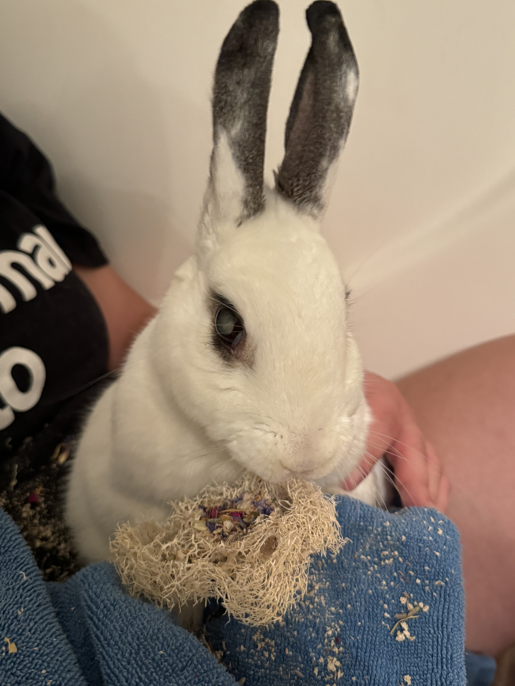

Content warning: discussion of mental health struggles, burglary, and profanity.
While in a fugue this afternoon, I dug through the day’s mail and came across the latest biweekly edition of the National Catholic Reporter, to which I have been a faithful subscriber for years; my wife affectionately calls it my “Jesuit rag.” I paged through it, not really paying much attention to the articles, but I stopped when I hit this one: “What ‘Bluey’ teaches us about times of spiritual desolation.”
I momentarily shook off my fuzziness and read it. It hit like a punch to the gut (no shortage of those today, for some reason). This paragraph rammed it home:
Desolation, as Ignatian spiritual director and writer Margaret Silf notes, is a spiritual state in which we turn in on ourselves, wallow in negative feelings and find ourselves cut off from community. We lose energy (Bandit spends the whole “TV Shop” episode looking for vitamins to give him an energy boost) and we lose sight of, and interest in, what’s important to us.
I’ve always struggled with living in the present and it’s gotten a lot harder in the past decade. Having a kid has made it a mixed bag, though the guilt for realizing I was mentally elsewhere has dramatically increased.
The description for what I’ve been feeling is dead-on: desolation.
I’ve been teetering between professional realities to some extent for almost 3 years now, at times unwilling to commit to a decision, at other times physically incapable. But this year will likely prove definitive, and it’s fucking terrifying. I’ve identified pros and cons, benefits and pitfalls; but there’s so much uncertainty that it becomes this all-encompassing buzz of anxiety that doesn’t quite rise to the level of drowning out everything else, but it’s close. It’s a dull roar with a strong muting effect, exhausting to the point of being very easy to give in until the dull roar is everywhere: a “lights are on but no one’s home” feeling. In a way, committing fully and finally would probably help! And if I’m really honest, I’ve already made a decision—I made it awhile ago—I just haven’t executed on it, not yet.
Somehow, this professional waffling is only one dimension of the desolation that’s been buzzing in my ears.
Yesterday, I heard that while my mom was at home by herself recovering from foot surgery, someone broke into her home. Very fortunately, the intent didn’t seem to be violent; in fact, the person seemed like they were in the middle of a mental health crisis. In some twisted cosmic way, it was almost fortunate that my mom was home, as she is a trained social worker and trauma therapist; the police even commented on how well she’d handled herself. Meanwhile, I can’t help but think about how badly it could have gone; hearing my mom give me the blow-by-blow over the phone when I called her that evening filled me with an awful sense of violation, and a much bigger part of me than I’d like to admit would have preferred that she’d pressed charges.
I received that news via text message while sitting in our vet’s office, listening to the vet tech tell us about the myriad medications we would need to start giving our 9+ year-old senior bunny, Clover (shown in the header photo of this post), to help her stay comfortable as arthritis and other age-related issues takes hold. My wife and I found Clover about half a mile down our street around Memorial Day 2015 during a run together. At the time, we were barely 6 months into our new jobs and location, and we still felt very lost and lonely—finding Clover, getting her taken care of, and welcoming this sweet and sassy bun into our family was one of the few signs that we were where we were meant to be. Finding ourselves nearing the other end is crushing.
After getting home from the vet, I heard that UGA, through some mistake in its software or its processes (they’re always vague about things like this), overpaid me this past month and will be asking for some of the money back. This is the third time in three years that an administrative mistake has resulted in me either having to repay UGA out of my own pocket or never seeing promised money in the first place, and I am… well, I’m fucking furious. I have no recourse, because each of these failures happened somewhere in seventeen layers of bureaucracy, so no individual or group could ever take responsibility. Except for me, of course: since it was my budget mistakenly entered, or my grant mistakenly paid out, or my salary mistakenly given, it’s on me to make the university whole again.
I’m seeing COVID rates start to increase again. Raging antisemitism has a stranglehold with people I once thought were allies and friends. Polls ahead of the November election in the US paint a dire picture of the potential outcome. A longtime and deeply meaningful friendship seems to have changed sometime over the past three years and I don’t know why.
There’s so much noise, so much desolation; all I want to do is turn inward. I know it’s self-defeating—the indecision is paralyzing, which makes any decision completely overwhelming, perpetuating the cycle—but I don’t know how to find that radical acceptance: being completely rooted in the present, for all its faults and uncertainties.
I feel an overriding desire to wrap this post up on a positive note but right now I can’t find one, and doing so would be disingenuous. It’d be giving into the desolation by painting a sunnier picture than what actually exists, and in doing so, conveying the subtle but critical message that I don’t need anyone’s help.
Which isn’t true at any level, but holy shit is it difficult to admit: I can’t do this on my own. Even the decision of where my professional life goes from here is not one I can make unilaterally. Maybe some people can; I’m just not one of them. Even if I didn’t have an amazing partner and equal to bounce ideas off of who can see through my every rationalization and weak-ass defense, I’d still seek out the advice of my family, friends, and mentors.
So if there’s any positive ending to this post, I suppose it’s this: I know what I need to do, but I absolutely need help doing it. I can’t beat back the desolation on my own. “We’re all in this together” is something I readily say to everyone—and I mean it!—but I carve out an exception for myself. I’m trying to end that, to reach out when I can tell I’m not only in over my head but am actively digging myself deeper.
Ok, speaking of digging a hole, I lied. This is the positive ending.
Citation
@online{quinn2024,
author = {Quinn, Shannon},
title = {Desolation},
date = {2024-06-13},
url = {https://magsol.github.io/2024-06-13-desolation},
langid = {en}
}